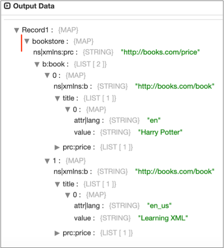
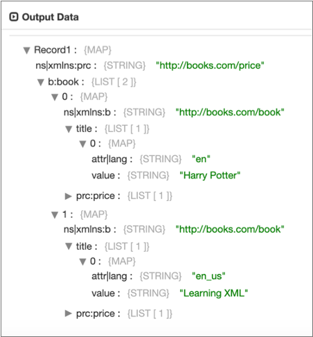
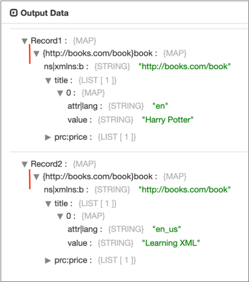
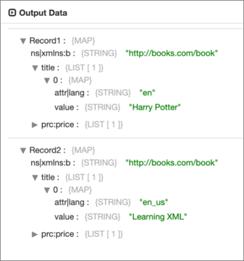
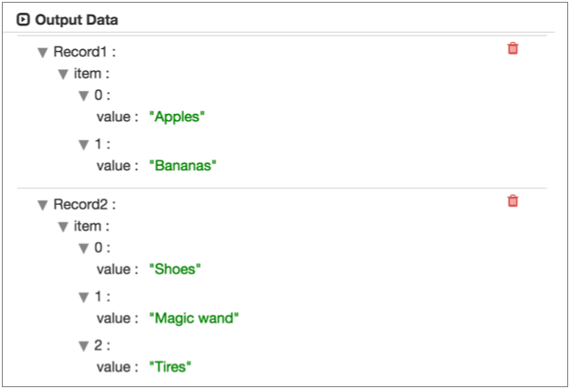

Reading and Processing XML Data
You can parse XML documents from an origin system with an origin enabled for the XML data format. You can also parse XML documents in a field in a Data Collector record with the XML Parser processor.
You can use the XML data format and the XML Parser to process well-formed XML documents. If you want to process invalid XML documents, you can try using the text data format with custom delimiters. For more information, see Processing XML Data with Custom Delimiters.
- Generate a single record
- To generate a single record from an XML document, do not specify a delimiter element.
- Generate multiple records using an XML element
- You can generate multiple records from an XML document by specifying an XML element as the delimiter element.
- Generate multiple records using a simplified XPath expression
- You can generate multiple records from an XML document by specifying a simplified XPath expression as the delimiter element.
For a full list of origins that support this data format, see Origins in the "Data Formats by Stage" appendix.
Creating Multiple Records with an XML Element
You can generate records by specifying an XML element as a delimiter.
When the data you want to use is in an XML element directly under the root element, you
can use the element as a delimiter. For example, in the following valid XML document,
you can use the msg element as a delimiter element:
<?xml version="1.0" encoding="UTF-8"?>
<root>
<msg>
<time>8/12/2016 6:01:00</time>
<request>GET /index.html 200</request>
</msg>
<msg>
<time>8/12/2016 6:03:43</time>
<request>GET /images/sponsored.gif 304</request>
</msg>
</root>msg instead of <msg>.Using XML Elements with Namespaces
When you use an XML element as a delimiter, Data Collector uses that exact element name that you specify to generate records.
If you include a namespace prefix in the XML element, you must also define the namespace in the stage. Then, Data Collector can process the specified XML element with the prefix.
For example, you use the a:msg element as the delimiter element and
define the Company A namespace in the stage. Then, Data Collector
processes only the a:msg element in the Company A namespace. It
generates one record for the following document, ignoring data in the
c:msg element:
<?xml version="1.0" encoding="UTF-8"?>
<root>
<a:msg xmlns:a="http://www.companyA.com">
<time>8/12/2016 6:01:00</time>
<request>GET /index.html 200</request>
</a:msg>
<c:msg xmlns:c="http://www.companyC.com">
<item>Shoes</item>
<item>Magic wand</item>
<item>Tires</item>
</c:msg>
<c:msg xmlns:c="http://www.companyC.com">
<time>8/12/2016 6:03:43</time>
<request>GET /images/sponsored.gif 304</request>
</c:msg>
</root>In the stage, you define the Namespace property using the prefix "a" and the namespace URI: http://www.companyA.com.
The following image shows a Directory origin configured to process this data:

Creating Multiple Records with an XPath Expression
You can generate records from an XML document using a simplified XPath expression as the delimiter element.
Use a simplified XPath expression to access data below the first level of elements in the XML document. You can also use an XPath expression to access namespaced elements or elements deeper in complex XML documents.
msg
element, as
follows:<?xml version="1.0" encoding="UTF-8"?>
<root>
<data>
<msg>
<time>8/12/2016 6:01:00</time>
<request>GET /index.html 200</request>
</msg>
</data>
<data>
<msg>
<time>8/12/2016 6:03:43</time>
<request>GET /images/sponsored.gif 304</request>
</msg>
</data>
</root>msg element is not directly under the root element, you cannot
use it as a delimiter element. But you can use the following simplified XPath expression
to access the data:/root/data/msgdata element can sometimes be
info, you can use the following XPath expression to access any data
in the msg element that is two levels
deep:/root/*/msgUsing XPath Expressions with Namespaces
When using an XPath expression to process XML documents, you can process data within a namespace. To access data in a namespace, define the XPath expression, then use the Namespace property to define the prefix and definition of the namespace.
<?xml version="1.0" encoding="UTF-8"?>
<root>
<a:data xmlns:a="http://www.companyA.com">
<msg>
<time>8/12/2016 6:01:00</time>
<request>GET /index.html 200</request>
</msg>
</a:data>
<c:data xmlns:c="http://www.companyC.com">
<sale>
<item>Shoes</item>
<item>Magic wand</item>
<item>Tires</item>
</sale>
</c:data>
<a:data xmlns:a="http://www.companyA.com">
<msg>
<time>8/12/2016 6:03:43</time>
<request>GET /images/sponsored.gif 304</request>
</msg>
</a:data>
</root>/root/a:data/msg
/root/*/msgThen define the Namespace property using the prefix "a" and the namespace URI: http://www.companyA.com.
The following image shows a Directory origin configured to process this data:

Simplified XPath Syntax
When using an XPath expression to generate records from an XML document, use a simplified version of the abbreviated XPath syntax.
- Operators and XPath functions
- Do not use operators or XPath functions in the XPath expression.
- Axis selectors
- Use only the single slash ( / ) child selector. The descendant-or-self double slash selector ( // ) is not supported.
- Node tests
- Only node name tests are supported. Note the following details:
- You can use namespaces with node names, defined with an XPath namespace prefix. For more information, see Using XPath Expressions with Namespaces.
- Do not use namespaces for attributes.
- Elements can include predicates.
- Predicates
- You can use the position predicate or attribute value predicate with elements, not both.
-
Use the following syntax to specify a position predicate:
/<element>[<position number>] -
Use the following syntax to specify an attribute value predicate:
/<element>[@<attribute name>='<attribute value>'] - You can use the asterisk wildcard as the attribute value. Surround the value in single quotation marks.
- Wildcard character
- You can use the asterisk ( * ) to represent a single element, as
follows:
/root/*/msg
Sample XPath Expressions
Here are some examples of valid and invalid XPath expressions:
- Valid expressions
- The following expression selects every element beneath the first top-level
element.
The following expression selects every value element under an allvalues element with a source attribute set to "XYZ". The allvalues element below a top-level element named root. Each element is in the abc namespace:/*[1]/*/abc:root/abc:allvalues[@source='XYZ']/xyz:value - Invalid expressions
- The following expressions are not valid:
/root//value- Invalid because the descendent-or-self axis (“//”) is not supported./root/collections[last()]/value- Invalid because functions, e.g. last, are not supported./root/collections[@source='XYZ'][@sequence='2']- Invalid because multiple predicates for an element are not supported./root/collections[@source="ABC"]- Invalid because attribute the attribute value should be in single quotation marks./root/collections[@source]- Invalid because the expression uses an attribute without defining the attribute value.
Predicates in XPath Expressions
- Position predicate
- The position predicate indicates the instance of the
element to use in the file. Use a position predicate when the element
appears multiple times in a file, and you want to use a particular instance
based on the position of the instances in the file, e.g. the first, second,
or third time the element appears in the file. Use the following syntax to specify a position predicate:
/<element>[<position number>] - Attribute value predicate
- The attribute value predicate limits the data to
elements with the specified attribute value. Use the attribute value
predicate when you want to specify an element with a particular attribute
values or an element that simply has an attribute value defined. Use the following syntax to specify an attribute value predicate:
/<element>[@<attribute name>='<attribute value>']
Predicate Examples
collections element under the apps second-level
element, you would use the following simplified XPath
expression:/*/apps/collectionsapps in the XML
document, you would add a position predicate as
follows:/*/apps[1]/collectionsapp elements in the document where the
collections element has a version attribute set to 3, add the
version attribute and value as follows:
/*/apps/collections[@version='3']/root/apps/collections[@version='*']Preserving the Root Element
You can include the root element in the generated record by enabling the Preserve Root Element property.
- Omit a delimiter
- When you omit a delimiter to generate a single record, the root element is the root element of the XML document.
- Specify a delimiter
- When you specify a delimiter to generate multiple records, the root element is the XML element specified as the delimiter element or is the last XML element in the simplified XPath expression specified as the delimiter element.
<?xml version="1.0" encoding="UTF-8"?>
<bookstore xmlns:prc="http://books.com/price">
<b:book xmlns:b="http://books.com/book">
<title lang="en">Harry Potter</title>
<prc:price>29.99</prc:price>
</b:book>
<b:book xmlns:b="http://books.com/book">
<title lang="en_us">Learning XML</title>
<prc:price>39.95</prc:price>
</b:book>
</bookstore>Root Element when Omitting a Delimiter
If you omit a delimiter to generate a single record, the root element is
bookstore, the root element of the XML document.
When you enable the Preserve Root Element property, Data Collector
generates the following record, including bookstore as the root
element:

When you disable the Preserve Root Element property, Data Collector
generates the following record, removing the bookstore root
element:

Root Element when Specifying a Delimiter
If you specify book as the delimiter element to generate multiple
records, the root element is book.
When you enable the Preserve Root Element property, Data Collector
generates the following records, including book as the root element
of both records:

When you disable the Preserve Root Element property, Data Collector
generates the following records, removing book as the root element
from both records:

Similarly, if you specify the XPath expression
/bookstore/book/author as the delimiter element to generate
multiple records, the root element is author. Data Collector
includes author in the generated records based on the Preserve Root
Element property.
Including Field XPaths and Namespaces
You can include field XPath expressions and namespaces in the record by enabling the Include Field XPaths property.
When enabled, the record includes the XPath expression for each field as a field attribute and includes each namespace in an xmlns record header attribute. By default, this information is not included in the record.
<?xml version="1.0" encoding="UTF-8"?>
<bookstore xmlns:prc="http://books.com/price">
<b:book xmlns:b="http://books.com/book">
<title lang="en">Harry Potter</title>
<prc:price>29.99</prc:price>
</b:book>
<b:book xmlns:b="http://books.com/book">
<title lang="en_us">Learning XML</title>
<prc:price>39.95</prc:price>
</b:book>
</bookstore>When you use /*[1]/* as the delimiter element and enable the Include
Field XPaths property, Data Collector
generates the following records with the highlighted field XPath expressions and
namespace record header attributes:

XML Attributes and Namespace Declarations
Parsed XML includes XML attributes and namespace declarations in the record as individual fields by default. You can use the Output Field Attributes property to place the information in field attributes instead.
Place the information in field attributes to avoid adding unnecessary information in the record fields.
Parsed XML
When parsing XML documents with the XML data format or the XML Parser processor, Data Collector generates a field that is a map of fields based on nested elements, text nodes, and attributes. Comment elements are ignored.
<?xml version="1.0" encoding="UTF-8"?>
<root>
<a:info xmlns:a="http://www.companyA.com">
<sale>
<item>Apples</item>
<item>Bananas</item>
</sale>
</a:info>
<c:info xmlns:c="http://www.companyC.com">
<sale>
<item>Shoes</item>
<item>Magic wand</item>
<item>Tires</item>
</sale>
</c:info>
</root>sale element in both namespaces,
you can use a wildcard to represent the second level info element, as
follows:/root/*/saleThen, you define both namespaces in the origin.
When processing the XML document using default XML properties, Data Collector produces two records, as shown in the following data preview of the origin:
